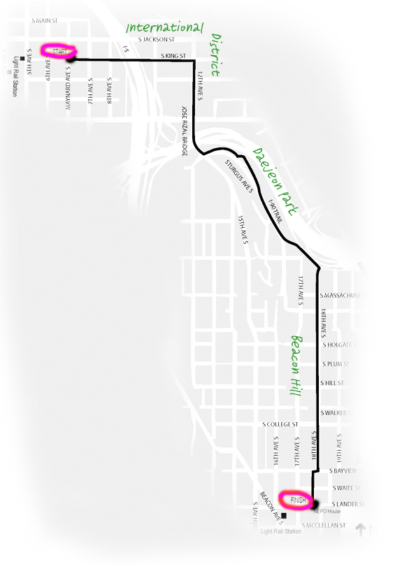

NEPO 5K DON'T RUN 2015
Call for art projects
This year NEPO 5k Don't Run will take place on August 29th, 2015. The upcoming event will be particularly meaningful for us as it will be the fifth and final iteration of NEPO 5K Don't Run in this location. It it will mark an ending of an amazingly transformative five year cycle. We want it to be a culmination and a celebration of all the creativity and love poured over these city streets over the past five years. Please submit your proposal and help us make this LAST HURRAY memorable.
We are seeking work in a variety of forms, including site-specific installations, performances, sculpture, visual art, street art, participatory and interactive works. Each year artists create 50 - 60 site-specific projects along the 5 kilometer route leading from Hing Hay park in the International District to NEPO House on Beacon Hill.
The route is varied and an interesting mix of urban and suburban environment. The start, in the heart of the International District, gives way to a grittier underworld under the freeway overpass only to emerge on top of Jose Rizal Bridge with one of the most spectacular sweeping views of the city. The initial dramatic ascent is followed by a mid-way repose in the grassy Daejeon park centered by its pagoda. The last leg of the journey leads through the Beacon Hill neighborhood with its inconsistent block to block feel and a few coveted treasure spots such as the cave like garage overgrown with ivy. Finish line is in front of NEPO House. See the route map below.
NEPO 5K DON'T RUN 2015
Date: Saturday August 29th, 2015, 12-10pm
Start: Hing Hay park (International District)
Finish: NEPO House (Beacon Hill)
The artwork has to be installed and taken down on the same day (with some exceptions)
HERE IS HOW TO APPLY
LETTER OF INTENT
Please let us know by email as soon as possible if you are interested in participating: nepohouse@gmail.com.
SUBMIT YOUR APPLICATION
The application deadline is April 10th.
We are asking for a short description of your proposed project (250 words), plus another 250 words available to provide further details in necessary. You can send us up to 5 images that demonstrate your idea. This could include photos, sketches, mockups, etc. If you know your preferred location, please specify on the application.

We will notify you by the end of April.
ROUTE WALK-THROUGH
Saturday March 28th, 10:00 am - meet in Hing Hay park, ends on Beacon Hill
Saturday April 4th, 10:00 am - meet in Hing Hay park, ends on Beacon Hill
To help you form ideas for site-specific proposals, our curatorial team will be walking the NEPO 5k route. You are welcome to join us to get acquainted with the route and discuss your project ideas. We recommend this walk especially if this is your first year participating, but NEPO veterans are always welcome - we love to chat and reconnect with you. Walk takes about an hour so plan for 2 hour outing including the return trip.
If you have questions, contact us at nepohouse@gmail.com
As always, looking forward to hearing about your projects and brilliant ideas!
Your NEPO team,
Klara Glosova, Sierra Stinson, Zack Bent and Serrah Russell.
Route map:
